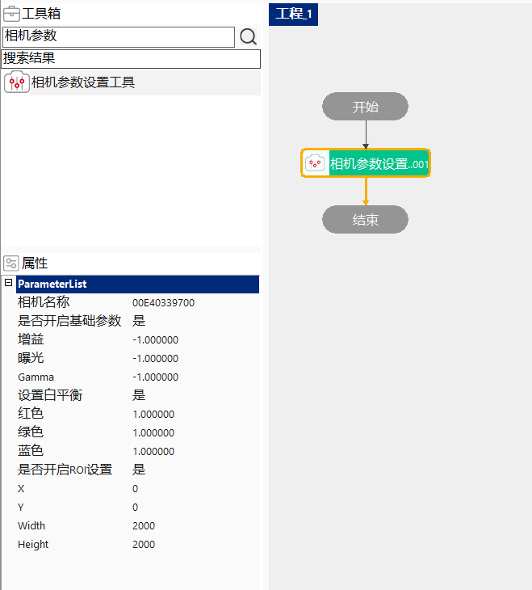

Công cụ thiết lập tham số camera dùng trong một số trường hợp cần thiết lập trước các tham số camera để chụp ảnh, không thể thiết lập trực tiếp trong công cụ thu thập hình ảnh.
Công cụ thiết lập tham số camera dùng trong một số trường hợp cần thiết lập trước các tham số camera để chụp ảnh, không thể thiết lập trực tiếp trong công cụ thu thập hình ảnh; sau khi thiết lập xong tham số, có thể chụp ảnh trước, khi chạy trong công cụ thu thập hình ảnh sẽ trực tiếp lấy ảnh đã chụp.
Khi điền tên camera, công cụ thiết lập tham số camera sẽ thực hiện thiết lập các tham số gain và phơi sáng đã đặt sẵn vào camera khi công cụ này được chạy, giúp camera sử dụng các tham số đã thiết lập khi chụp ảnh.

Trước tiên tìm camera sử dụng trong quản lý camera, sau đó điền tên camera vào mục “Tên camera”, rồi thiết lập gain và phơi sáng cho camera, khi công cụ này chạy sẽ thiết lập camera theo tham số đã đặt trong thuộc tính công cụ.
| Mô tả hiện tượng | Cách giải quyết |
|---|---|
| Lỗi không tìm thấy camera chỉ định | Kiểm tra camera có kết nối trong quản lý camera hay không, nếu có kết nối thì kiểm tra tên có viết sai không, nếu không kết nối thì kiểm tra theo FAQ để xử lý vấn đề; |
| Tên tham số | Giải thích tham số |
|---|---|
| Tên camera | Nhập tên camera đã được thiết lập trong quản lý camera. |
| Có bật tham số cơ bản | Bật/tắt các tham số phơi sáng, gain, Gamma. |
| Phơi sáng | Giá trị tham số phơi sáng cần thiết lập cho camera. |
| Gain | Giá trị tham số gain cần thiết lập cho camera. |
| Gamma | Giá trị tham số Gamma cần thiết lập cho camera. |
| Thiết lập cân bằng trắng | Bật/tắt tính năng cân bằng trắng. |
| Màu đỏ | Giá trị tham số kênh đỏ cần thiết lập cho camera màu. |
| Màu xanh lá | Giá trị tham số kênh xanh lá cần thiết lập cho camera màu. |
| Màu xanh dương | Giá trị tham số kênh xanh dương cần thiết lập cho camera màu. |
| Có bật thiết lập ROI | Bật/tắt thiết lập vùng quan tâm (ROI) của camera. |
| X | Giá trị tham số X của ROI cần thiết lập cho camera. |
| Y | Giá trị tham số Y của ROI cần thiết lập cho camera. |
| Chiều rộng (Width) | Giá trị tham số chiều rộng của ROI cần thiết lập cho camera. |
| Chiều cao (Height) | Giá trị tham số chiều cao của ROI cần thiết lập cho camera. |
| Tên tham số | Giải thích tham số |
|---|---|
| Kết quả thực thi | Công cụ này sau khi chạy cho biết phơi sáng và gain của camera được thiết lập thành công hay thất bại. |
| Thời gian thực thi | Thời gian công cụ thực thi. |
参见“\Samples\相机参数设置工具.gvp”。